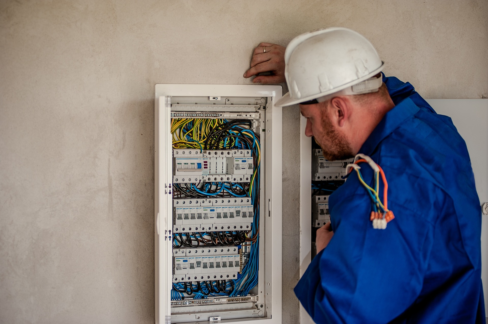

Procedura Przeglądu:
1. Oględziny
Inspekcja instalacji, zabezpieczeń, aparatów wraz z urządzeniami zasilanymi energią elektryczną.
2. Badanie
Pomiary parametrów instalacji elektrycznej i odgromowej.
3. Formalności
Z wykonanego przeglądu i pomiarów sporządzany zostaje protokół zawierający szczegółowy opis wykonanych czynności i uzyskane wyniki a także opinie, wnioski i zalecenia do realizacji, celem poprawy bezpieczeństwa.
Do protokołu załączane są:
- Świadectwa kwalifikacji osób wykonujących, sporządzających i zatwierdzających dokument.
- Świadectwo legalizacji użytych do badań mierników.
- Szkice, zdjęcia.
4. Finalizacja
Dokument zostaje dostarczony w wersji papierowej oraz przesłany drogą elektroniczną.